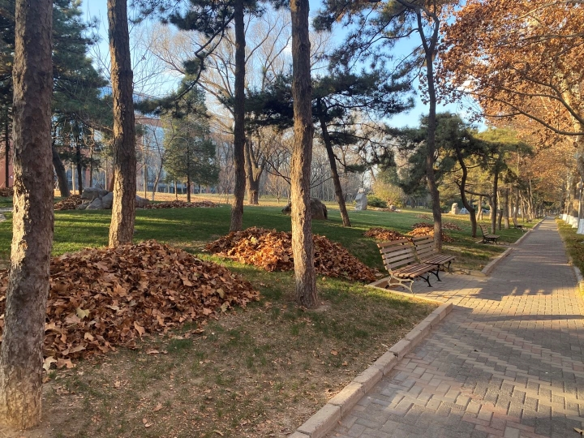

Hi, and welcome! I joined School of Management at University of Science and Technology of China, as a Tenure-Track Associate Professor. I received my Ph.D. degree in Economics from Tsinghua University on June, 2024.
My research interests are behavioral economics with a focus on revealed preference, bounded rationality, and their interaction with artificial intelligence, using methods including (but not limited to) experimental economics and applied microeconomics.
Contact: shanyouleo@gmail.com